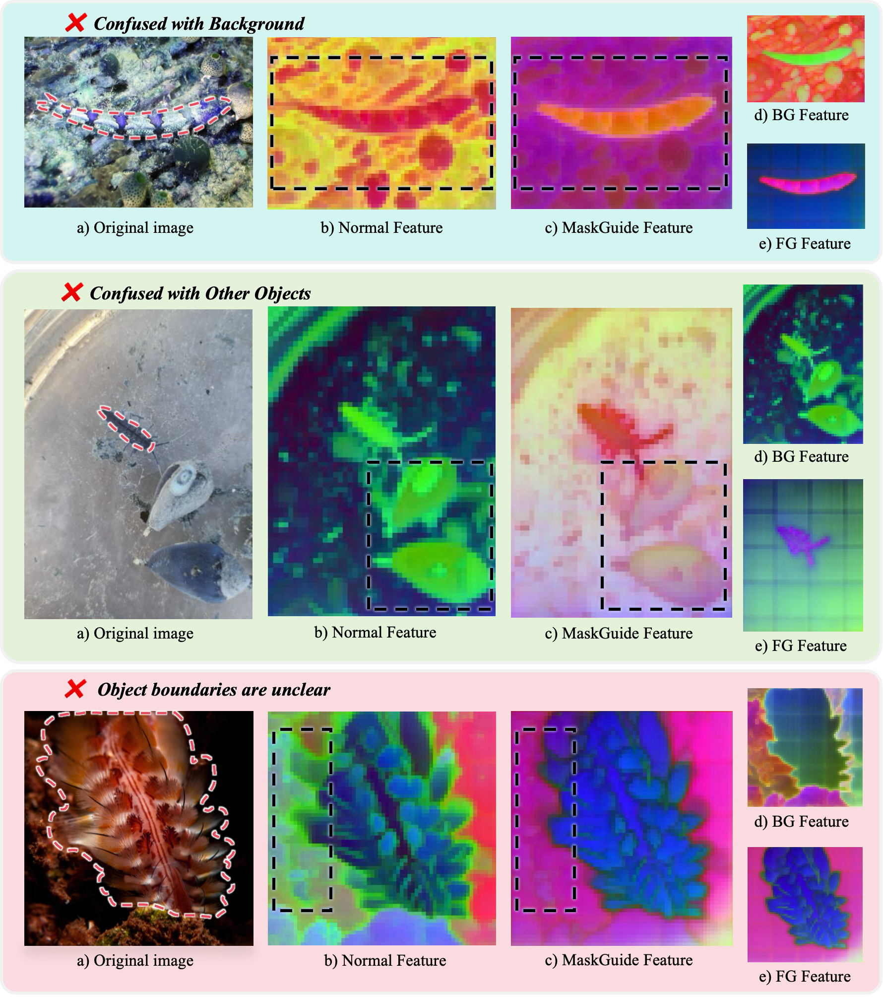
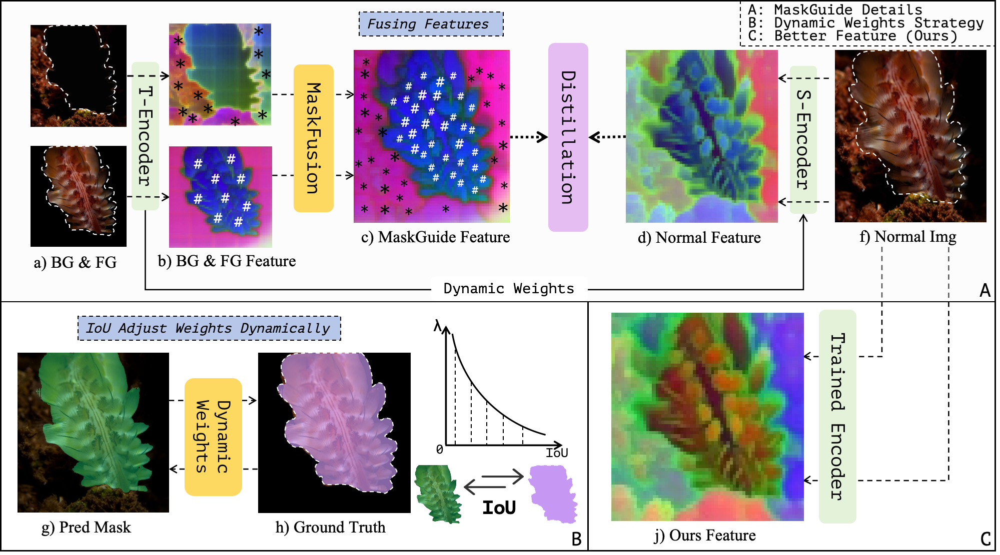
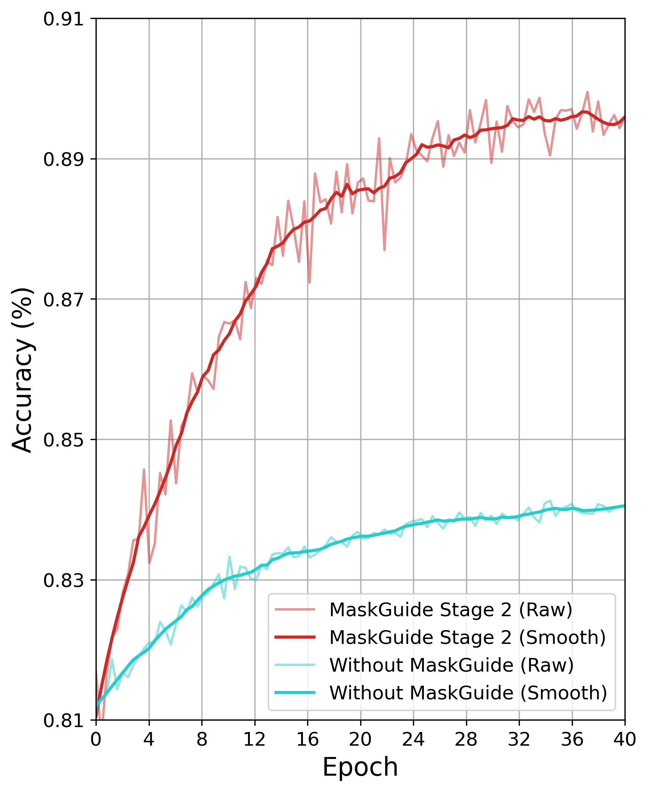
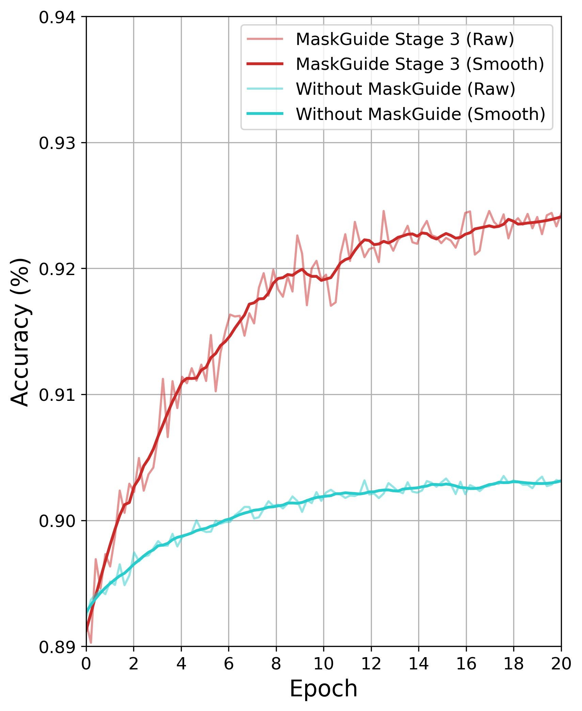
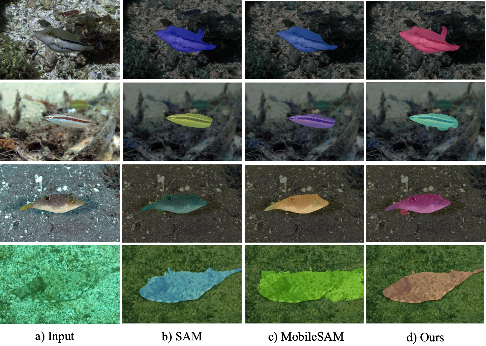

The Segment Anything Model is accurate but far too heavy for underwater robots, while lightweight models lose accuracy in murky, low-contrast seas. MaskGuide closes the gap with a feature-level distillation framework that disentangles teacher features into foreground and background and fuses them into a cleaner supervisory signal — yielding Tiny-MSAM, an ultra-light encoder that keeps 99.4% of SAM's accuracy at 3.5M parameters and 164.7 FPS.
The challenge
Marine biologists need SAM-level masks on an underwater robot — but SAM's ViT-H encoder is 637 M parameters, and shrinking it underwater wrecks the accuracy.
Underwater imagery is a worst case for segmentation: light attenuation, color distortion, low contrast and cluttered backgrounds erode the very cues a model relies on. SAM and SAM 2 still cope — but their heavyweight encoders can't run on the edge devices marine robots actually carry.
Off-the-shelf lightweight models (MobileSAM, FastSAM) are fast, yet they were distilled on everyday land scenes with generic strategies, so they degrade sharply in the sea. The result is a stubborn gap: either accurate and unusable, or deployable and unreliable.
MaskGuide attacks the gap at the feature level — improving the supervisory signal itself rather than pre-processing pixels — to train an encoder that is both tiny and ocean-ready.
Why naive distillation fails underwater
Distilling straight from raw marine images carries noise and weak guidance into the student. A PCA view of the feature maps exposes three recurring failures — each of which MaskGuide is designed to repair.

The target blends into cluttered reef and sand; activations look the same inside and outside the object.
Different organisms share near-identical features, so the model can't tell one instance from another.
Activations smear out and never form a crisp contour, blurring the object's true outline.
Our approach
Rather than enhancing the input image, MaskGuide enhances the teacher's features. Using the teacher's own mask, it splits each feature map into a foreground stream and a background stream, then recombines all three views into a single, higher-quality target for distillation — at no extra inference cost to the student.

Element-wise gating keeps target features and suppresses background noise, focusing the student on the teacher's intrinsic object representation.
I_fg = I ⊙ MThe inverted mask amplifies surrounding context, restoring boundary discrimination and contextual reasoning that pure foreground focus would lose.
I_bg = I ⊙ (1 − M)A weighted element-wise average of the original, foreground and background streams builds a richer teacher signal while staying cheap and inference-free.
F_fused = Fusion(F_orig, F_fg, F_bg)A static distillation schedule can't transfer SAM's full capability into a tiny model. TIO (Three-stage Iterative Optimization) sequences the objectives — general grounding, marine distillation, then hard-sample refinement — to avoid catastrophic forgetting.
general grounding → marine feature distillation → hard-sample refinement
Benchmarks · UIIS · IMC · COCO
On underwater instance segmentation (UIIS), our marine-tuned IMC benchmark, and COCO, MaskGuide lifts both backbones above their teachers, while the from-scratch Tiny-MSAM rivals SAM at a fraction of the cost. Avg. is the mean of 1-point, 5-point and box-prompt mIoU.
| Method | Params | UIIS Avg. | IMC Avg. | COCO |
|---|---|---|---|---|
| SAM (ViT-H) teacher | 637 M | 39.8 | 86.5 | 80.4 |
| SAM 2 (Large) | 224 M | 41.0 | 85.6 | 80.8 |
| SAM 2 (Tiny) | 38.9 M | 37.3 | 84.8 | 78.2 |
| MobileSAM (ViT-Tiny) | 6 M | 39.5 | 83.2 | 77.8 |
| Ours MobileSAM | 6 M | 43.4 | 87.2 | 79.1 |
| Tiny-MSAM from scratch | 3.5 M | 40.9 | 81.7 | 77.0 |
| Ours SAM | 637 M | 44.3 | 89.0 | 80.6 |
mIoU on UIIS / IMC / COCO. Cells run warm (strong) → cool (weak) within each column. Our MobileSAM variant beats its own teacher SAM (ViT-H) on UIIS and IMC; Tiny-MSAM reaches 99.4% of SAM's UIIS accuracy with 0.5% of its parameters.
| Model | Weights | FPS |
|---|---|---|
| SAM (ViT-H) | 2.43 GB | 4.2 |
| SAM 2 (Large) | 856 MB | 11.9 |
| SAM 2 (Tiny) | 149 MB | 31.4 |
| FastSAM | 138 MB | 37.2 |
| EfficientSAM | 39.1 MB | 112.3 |
| MobileSAM | 23.18 MB | 127.4 |
| Tiny-MSAM Ours | 13.42 MB | 164.7 |
Efficiency on the edge. Tiny-MSAM is the lightest and fastest of all open SAM variants — a favorable Pareto point on the accuracy–efficiency curve.
After MaskGuide, the MobileSAM student surpasses SAM (ViT-H) on UIIS and IMC — better features, not just cheaper ones, because the fused teacher signal is cleaner than the raw one.
Tiny-MSAM holds 99.4% of SAM's UIIS accuracy at 3.5M params, 13.4MB and 164.7 FPS — and it was trained from scratch, revealing the method's lower bound.
Distillation beats running an underwater image-enhancement front-end (Semi-UIR) before segmentation — 87.2 vs 84.5 Avg. on IMC — by transferring robust priors instead of amplifying artifacts.
A closer look
On the validation set, the same pipeline trained with MaskGuide (red) reaches a higher IoU plateau far sooner than the identical run without it (cyan) — directly explaining the accuracy gains in the tables above.


Both backbones converge faster and to a higher final IoU with MaskGuide — stable knowledge transfer rather than noisy, slow distillation.
Side by side
Across severe light attenuation, low contrast and cluttered backgrounds, MaskGuide produces more precise, reliable masks than MobileSAM — and matches or beats the much larger SAM. Click any image to enlarge.

Citation
If MaskGuide or Tiny-MSAM helps your work on marine perception or efficient segmentation, please cite the RA-L paper.
@article{wu2026maskguide,
title = {MaskGuide: Efficient Distillation for Deployable Lightweight
Segmentation in Marine Environments},
author = {Wu, Xinrui and Zheng, Ziqiang and Chen, Yiwei and
Ma, Zeyu and Yang, Yang and Yeung, Sai-Kit},
journal = {IEEE Robotics and Automation Letters (RA-L)},
year = {2026},
publisher = {IEEE}
}